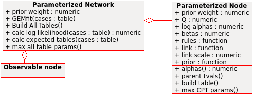

Peanut (a corruption of parameterized network, or Pnet) is a an object oriented layer designed to rest on top of CPTtools. In particular, it introduces a parameterized node (Pnode) class that can associates the parameters of the discrete partial credit models with the node object and a parameterized network (Pnet) class that contains a collection of parameterized nodes. The figure below givens the object model.

The most important method in the class is the GEMfit method, which uses the generalized EM algorithm to the CPTs for the parameterized nodes to a set of cases. It may offer other capabilities as it evolveds.
In order to keep the dependencies on a specific Bayes net package to a minimum, they were isolated in a separate package. The Peanut package defines a series of functions and the PNetica package provides methods for objects of the NeticaBN and NeticaNode classes (both from the RNetica package). The idea is similar to the relationship between the DBI and RMySQL packages.
I presented information about Peanut and PNetica at the UAI workshop in 2015. The offical paper is published in CEUR volume 1565, paper 4. Slides for the talk are available here (PDF).
Peanut and PNetica are made available under the Artistic License, version 2.0. PNetica depends on RNetica, which has a somewhat more complex license.
The current version (0.1-3) has been tested on simple models and contains a users manual for both Peanut and PNetica. There is currently some difficulty in the parameter recovery tests, but this may be due to limited size of the model.
| Release | Source | Windows Binary | Mac Binary | Manual | Notes |
|---|---|---|---|---|---|
| 0.1-2 | Peanut_0.1-2.tar.gz | Peanut_0.1-2.zip | Peanut_0.1-2.tgz | Peanut-manual_0.1-2.pdf | Initial Trial Release |
| 0.1-3 | Peanut_0.1-3.tar.gz | Peanut_0.1-3.zip | Peanut_0.1-3.tgz | Peanut-manual_0.1-3.pdf | Manual Cleanup |
| Release | Source | Windows Binary | Mac Binary | Manual | Notes |
|---|---|---|---|---|---|
| 0.1-2 | PNetica_0.1-2.tar.gz | PNetica_0.1-2.zip | PNetica_0.1-2.tgz | No Manual | Initial Trial Release |
| 0.1-3 | PNetica_0.1-3.tar.gz | PNetica_0.1-3.zip | PNetica_0.1-3.tgz | PNetica-manual_0.1-3.pdf | Manual Complete |
If you have patches or other correspondence about Peanut you can contact me at almond@acm.org. If you are filing a bug report, please be sure to include:
I would also be willing to host alternatives to PNetica using other Bayes net packages on this server (either Web or Subversion). Contact me for details.
Netica and Norsys are registered trademarks of Norsys, LLC, used by permission.
Although Norsys has been generally supportive of the RNetica project, they do not offer formal support in any way. (In particular, the do not currently have anybody on staff who knows R.) All support requests should be sent to the package maintainers.
The software is offered AS IS, without any warranty of any kind. Support is provided on a volunteer basis, and may not be immediately forthcoming.